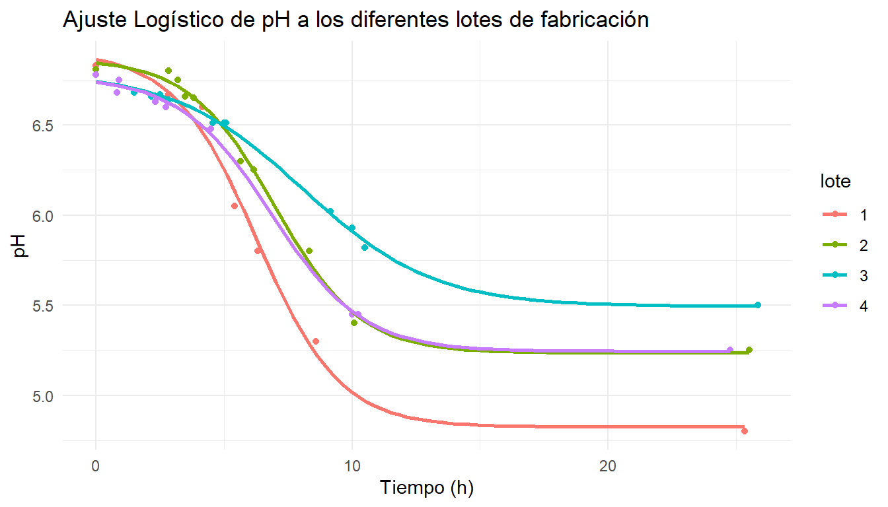

Modelizar la curva de acidificación en un caso real
Análisis de datos de elaboración
queso
estadística
modelos
R
FP
PUBLICADO
22 de abril de 2026
Práctica con datos reales: elaboraciones en Formación Profesional
Analizamos en este artículo algunos datos de producción obtenidos durante las prácticas del Curso de Especialización en Tecnología y Gestión Quesera, impartido en el Centro de Formación Profesional Juan de Villanueva (Pola de Siero). Retomamos aquí los conceptos presentados en el artículo anterior sobre la modelización de las curvas de acidificación; puede ser útil revisarlo para comprender los distintos modelos, los criterios que justifican la elección de la curva logística estándar como la más adecuada en este caso y la interpretación de los parámetros que la definen.
Los datos del aula: abundantes en variabilidad, limitados en densidad
Las prácticas de elaboración de queso en FP de Industrias Alimentarias generan datos reales de proceso, pero con una estructura muy diferente a los datos de laboratorio industrial. Las medidas de pH se toman de forma manual, en los momentos que la dinámica del aula permite: al inicio antes de añadir los fermentos, en los controles periódicos durante la cuba, y en los puntos críticos del proceso (corte de cuajada, inicio de prensado, entrada en salmuera). El resultado es un conjunto de datos con tres características que condicionan el análisis.
Veamos los datos originales; para ello inicializamos las bibliotecas que vamos a necesitar y leemoslos datos:
La primera característica de los datos es la densidad baja e irregular. Los cuatro lotes que vamos a considerar tienen entre 7 y 11 medidas de pH válidas cada uno, pero no distribuidas uniformemente en el tiempo.
El lote 2 concentra cuatro medidas en un intervalo de apenas una hora (de 2,8 h a 3,8 h desde la inoculación), todas en la zona plana inicial donde el pH todavía no ha caído significativamente, y luego salta directamente a las 5,7 h sin cobertura del tramo de máxima actividad.
El lote 3 tiene cuatro medidas seguidas entre 1,5 h y 2,8 h, también en la fase plana, y después un hueco de casi dos horas hasta el moldeo a las 4,6 h.
El lote 4 presenta dos medidas en los primeros 55 minutos que reflejan la inercia térmica de la leche (un descenso desde 6,68 hasta 6,75 seguido de una recuperación, probablemente por calentamiento de la cuba) y luego un único punto en la fase de prensa antes de los 4,5 h. Esta irregularidad refleja posiblemente el hecho de que en el aula se trabaja con varias tareas simultáneas y que los procesos de corte, desuerado y prensado han tenido prioridad operativa sobre la toma de datos analíticos.
La segunda es la variabilidad entre lotes. Los pH iniciales oscilan entre 6,78 y 6,83, lo que sugiere leches con calidad de partida similar. Pero las temperaturas de cuba en el momento de inoculación difieren notablemente: el lote 4 registra 27°C al añadir los fermentos y sube a 36°C en los siguientes 50 minutos, mientras que los lotes 2 y 3 arrancan directamente a 32°C. Esa diferencia de arranque térmico afecta al \(t_i\) y hace que la comparación directa de velocidades de acidificación entre lotes requiera interpretación cuidadosa.
La tercera es la presencia de datos faltantes estructurales. El lote 1 tiene una fila de cuba sin hora ni pH, que no aporta información al ajuste, y es eliminada en los cálculos. El lote 2 incluye una fila de prensa con hora registrada como medianoche (00:00) — un error de transcripción evidente que produce un tiempo calculado de −8,5 h y debe excluirse. El lote 4 tiene dos filas de prensa consecutivas sin pH, a las 5,75 h y 7,75 h, que dejan un hueco de 5,5 h sin ninguna medida en la fase de caída activa. En todos los lotes, el seguimiento al día siguiente en cámara (en torno a las 25 h) proporciona un punto en el talón, pero con la temperatura ya reducida a 5°C, lo que dificulta determinar si el pH registrado refleja el final de la acidificación activa o una estabilización por frío.
Ajuste a los cuatro lotes de fabricación
Para calcular los tiempos de acidificación de cada lote, agrupamos por lotes, y calculamos los tiempos de referencia por diferencia entre cada valor y el valor inicial en cada grupo, después de haber eliminado las filas para las que no hay valores. El punto de partida es el primer control, que es el momento en el que se han añadido los fermentos. t_refes el tiempo de referencia inicial para cada lote, y hora es el tiempo transcurrido desde ese momento hasta cada control, expresado en fraccion decimal de hora.
Ahora calculamos los parámetros de la curva logística para los valores de pH de cada lote:
Mostrar código R
analizar_lote <-function(df) {# 1. Ajuste del modelo logístico# Usamos ti como parámetro de tiempo de inflexión modelo <-tryCatch({nls(pH ~ K + (A - K) / (1+exp(r * (hora - ti))), data = df,start =list(A =max(df$pH), K =min(df$pH), r =0.5, ti =median(df$hora))) }, error =function(e) return(NULL))if (is.null(modelo)) return(NULL)# 2. Extraer coeficientes cf <-coef(modelo) A <- cf["A"] K <- cf["K"] r <- cf["r"] ti <- cf["ti"]# 3. Cálculo de Vmax y estadísticos de calidad v_max <-abs(r * (A - K) /4) rss <-sum(residuals(modelo)^2) tss <-sum((df$pH -mean(df$pH))^2) r2 <-1- (rss / tss)# 4. Crear la tabla de resultados para este lotetibble(A =round(A, 2),K =round(K, 2),r =round(r, 4),ti =round(ti, 2), Vmax =round(v_max, 4),R2 =round(r2, 4),AIC =round(AIC(modelo), 2) )}# 5. Ejecutar el análisis para todos los lotesresultados <- datos |>group_by(lote) |>reframe(analizar_lote(pick(everything())))# print(tabla_final)resultados |>gt()
Tabla 3: Tabla de parámetros del modelo logístico
lote
A
K
r
ti
Vmax
R2
AIC
1
6.91
4.83
0.6142
6.28
0.3196
0.9897
-7.06
2
6.87
5.24
0.5998
6.97
0.2449
0.9946
-25.45
3
6.79
5.49
0.3953
8.09
0.1284
0.9972
-48.31
4
6.77
5.25
0.5630
6.85
0.2146
0.9977
-28.21
Análisis de Resultados: Modelización de la Fermentación Láctica
A continuación se resumen los estadísticos clave utilizados para evaluar la calidad del ajuste de las curvas de pH obtenidas.
1. Tabla Comparativa: R² vs. AIC
Característica
\(R^2\) (Coeficiente de Determinación)
AIC (Criterio de Akaike)
¿Qué mide?
El porcentaje de variabilidad de los datos que el modelo explica.
La pérdida de información y la eficiencia del modelo.
Interpretación
Qué tan “cerca” están los puntos reales de la línea trazada.
El equilibrio entre el buen ajuste y la sencillez del modelo.
Valor ideal
Lo más cercano a 1 (o 100%).
El valor más bajo (el más pequeño o más negativo).
Uso principal
Validar la precisión del ajuste en un solo modelo.
Comparar modelos para ver cuál es estadísticamente más robusto.
Puntos débiles
Tiende a subir siempre que añadimos parámetros, aunque no sean útiles.
No indica el % de éxito, solo indica qué modelo es preferible.
2. Definiciones
Coeficiente de Determinación (\(R^2\))
El \(R^2\) es una medida de la bondad de ajuste. Un valor de 0.99 significa que el modelo logístico explica el 99% de los cambios de pH observados durante la fermentación. Si el valor es bajo (por ejemplo, menor a 0.90), indica que los datos tienen mucho “ruido” o que la fermentación no siguió un curso normal.
Criterio de Información de Akaike (AIC)
El AIC es un estadístico de selección de modelos. Su función es penalizar a los modelos que son demasiado complejos (con demasiados parámetros) y premiar a los que son sencillos y ajustan bien.
Regla de oro: Al comparar lotes, aquel con el AIC más bajo (por ejemplo, -49.4 frente a -7.1) es el que presenta un comportamiento más consistente con la teoría matemática del modelo logístico.
3. Parámetros de la Curva Logística
En la tabla de resultados se encuentran también estos parámetros fundamentales:
\(A\) (asíntota superior): pH inicial de la leche antes de la acidificación intensa.
\(K\) (asíntota inferior): pH final de equilibrio cuando la fermentación se detiene.
\(t_i\) (tiempo de inflexión): Momento exacto (en horas) donde la caída del pH es más rápida. En la curva logística estándar se sitúa en la mitad de la curva (50%)
\(r\) (tasa): Velocidad relativa de caída, la inclinación media de la curva en la sección de descenso (mayor valor \(r\) significa mayor inclinación)
\(V_{max}\) : La pendiente máxima de la curva, calculada como \(V_{max} = |r \cdot (A - K) / 4|\). Representa la velocidad máxima de acidificación real en unidades de pH/hora.
Gráfico de las curvas logísticas ajustadas a los valores reales de los diferentes lotes de fabricación
Una vez calculados los parámetros de cada curva, podemos proceder a dibujarlas, dejando que ggplot() se ocupe de dibujar la función logística. Para ello le decimos que utilice la función nls(), que es la función de regresión no linear de R. Necesitamos dar unos valores iniciales, que calculamos con los valores extremos del conjunto de curvas. A veces esta estimación de los valores iniciales no es suficientemente buena para hacer converger la función y genera un error; en ese caso podríamos recurrir a funciones más sofisticadas, como SSlogis(), o usar una función más estable que nls(), como por ejemplo nlsLM() de la librería minpack.lm. Como en este caso no es necesario, mantengo el esquema más simple para facilitar su comprensión. Alternativamente, se pueden explorar también estas opciones.
Mostrar código R
# 1. Definimos la fórmula logística (más fácil de leer)formula_logistica <- y ~ K + (A - K) / (1+exp(-r * (x - ti)))# 2. Buscamos las estimaciones iniciales para nlsK_ini <-min(resultados$K)A_ini <-max(resultados$A)r_ini <-median(resultados$r)ti_ini <-median(resultados$ti)# 3. Creamos el gráfico directamenteggplot(datos, aes(x = hora, y = pH, color = lote)) +geom_point() +geom_smooth(method ="nls", formula = formula_logistica, method.args =list(start =list(K = K_ini, A = A_ini, r = r_ini, ti = ti_ini)), se =FALSE ) +labs(title ="Ajuste Logístico de pH a los diferentes lotes de fabricación", x ="Tiempo (h)", y ="pH") +theme_minimal()

Figura 1: Ajuste de la curva logística sobre los 4 lotes de prácticas. Los puntos representan las medidas reales de pH; su distribución temporal irregular es visible en el espaciado entre puntos.
Lo que los parámetros dicen del proceso
La elección de la logística como modelo de referencia se apoya en el ajuste estadístico, que en nuestro caso es muy bueno, y la adecuación a la dinámica real de la acidificación láctica y fórmula de \(V_{max}\) más sencilla.
Los resultados de \(K\) cuentan la historia del proceso:
Lote 1\(K\) = 4,83: sobreacidificación. El fermento siguió activo más tiempo del previsto y la cuajada llegó a un pH muy bajo para una pasta prensada estándar. En este lote es de esperar una desmineralización excesiva.
Lotes 2 y 4\(K\) = 5,25: acidificación correcta para pasta prensada.
Lote 3\(K\) = 5,49: acidificación incompleta. El fermento no llegó al pH objetivo, posiblemente por temperatura insuficiente o por un problema con el cultivo. Puede haber riesgo de contaminación o de microorganismos no deseados.
Además de estos resultados, los parámetros del modelo que hemos calculado nos permiten incluir en nuestra tabla de datos de producción los principales indicadores que definen cada curva. Esto nos permitirá su análisis posterior junto con el resto de indicadores de la producción.